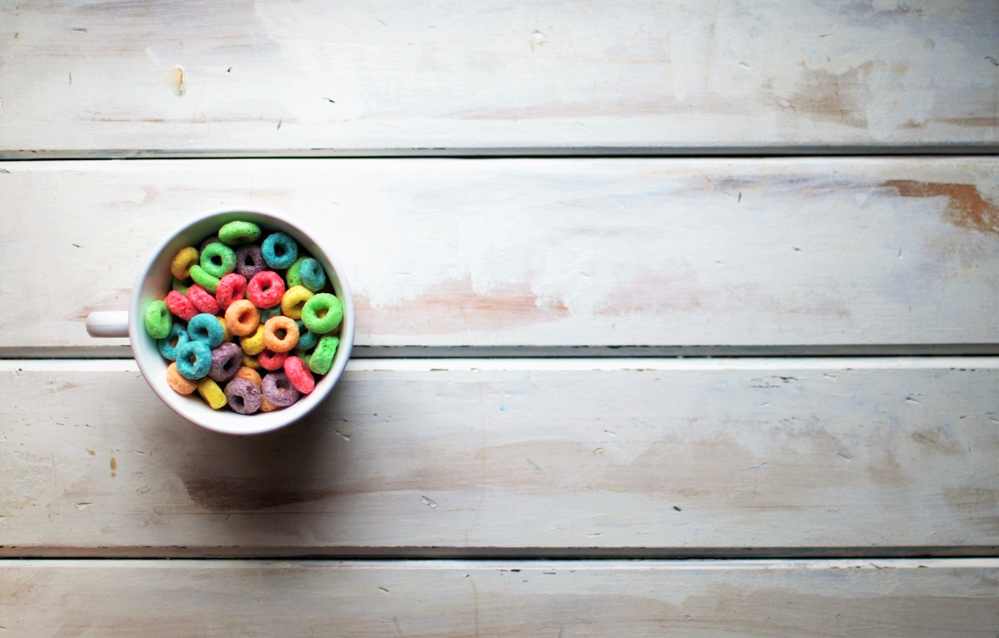

Ingredients
- Fruit Loops
- Orange Juice
- Strawberry
- Blueberry
Preparation
- Pour Orange Juice
- Add Fruit Loops
- Add Fruits
Flipping the cereal game on its head, revolutionizes the breakfast industry with its avant garde perception of time, space, and reality through cereal. Gordon Ramsay wouldn't ever touch this.